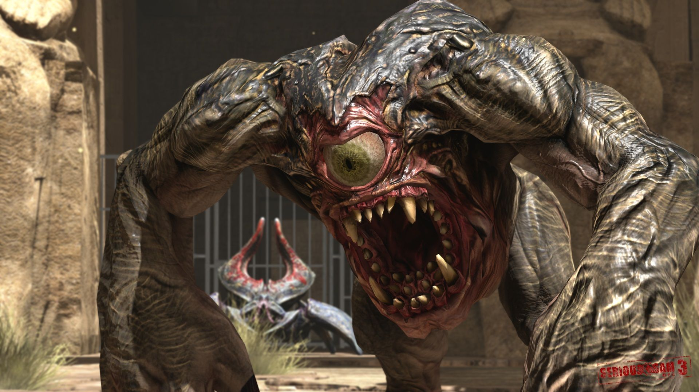
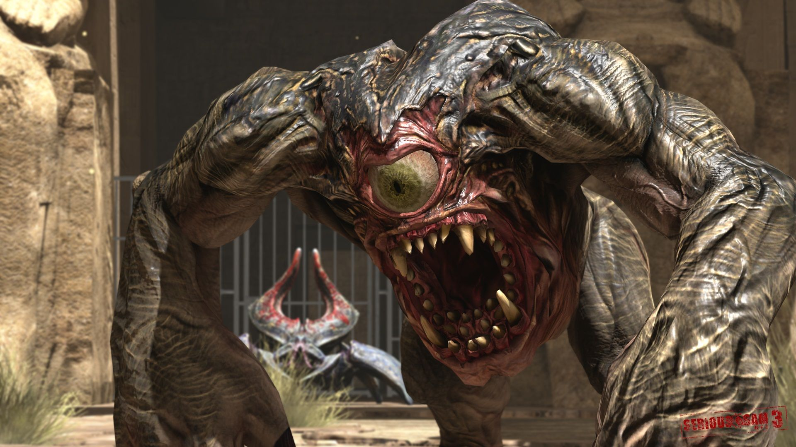
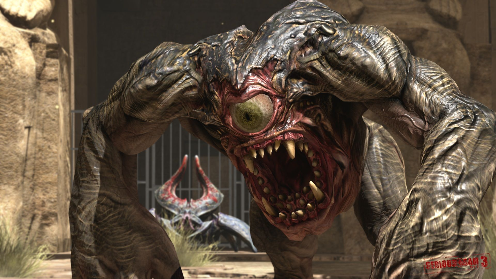

Serious Sam 3: BFE получила преимущественно положительные оценки.
Средний балл игры на агрегаторе Metacritic составляет 72 % (на основе 53 рецензий) и 75 % на GameRankings (на основе 37 рецензий).
Портал Eurogamer поставил игре 7 баллов из 10, отметив, что Serious Sam 3: BFE является тем, чем не удалось стать Duke Nukem Forever, однако посетовав на чрезмерный избыток фирменного геймплея по сравнению с предыдущими играми серии.
Журнал Game Informer поставил игре 7.75 баллов, похвалив графику, саундтрек в жанре хеви-метал и верность оригинальной концепции.
Популярный рецензент Destructoid, Джим Стерлинг, поставил игре 8.5 баллов из 10, написав: «Игра доставляет много удовольствия.
Много изнурительного, непосильного и душераздирающего удовольствия».
Редактор Dealspwn Джонатан Лестер провозгласил Serious Sam 3: BFE своей личной игрой года и назвал её «возвращением короля».
Портал Absolute Games поставил игре 75 баллов из 100, похвалив её за возвращение к истокам в отличие от Serious Sam II.
Кирилл Волошин в рецензии на сайте Игры@Mail.ru отметил, что первые уровни игры невольно напоминают Call of Duty, но похвалил игру за приверженность традициям и приятную графику.
Редактор журнала Игромания Алексей Макаренков поставил игре 8.5 баллов, заметив: «Далеко не идеальный, слегка сыроватый, местами кособокий, но абсолютно безбашенный и по-прежнему — да-да, то самое слово — ураганный шутер.
Его можно не любить, но сложно не влюбиться.» Журнал Лучшие компьютерные игры оценил Serious Sam 3: BFE в 82 балла и дал игре орден.
Игра представлена в жанре трёхмерного шутера с видом от первого лица.
Игрок по-прежнему управляет Сэмом «Серьёзным» Стоуном — главным героем предыдущих частей.
Геймплей также типичен для других игр серии и базируется на столкновении с многочисленными монстрами на больших открытых локациях.
Действие игры происходит задолго до событий первой части, до активации Ключа к Вечности и отправки Сэма в далекое прошлое.
В игре представлено 12 просторных уровней, с подсчётом очков в конце каждого из них.
Некоторые уровни состоят из поисков ключей, однако, большинство состоит из обычного отстрела и продвижения от одной контрольной точки к другой.
Регенерация здоровья отсутствует, вместо этого используется классическая система аптечек и брони.
Присутствуют боссы, а точнее, два: инопланетный корабль и колдун Угх-Зан IV, убийство которых требует знания слабых мест противника.
Игрок может переносить внушительный арсенал оружия, однако его выбор претерпел незначительные изменения в сравнении с другими играми серии: например, на смену пилы и ножа пришла кувалда, способная одним ударом разорвать слабого врага в клочья; вместо привычных револьверов — пистолет «Пустынный орёл» и т. д. Остались ракетница, пулемёт Гатлинга, корабельная пушка, дробовик, двустволка, лазерное ружьё и снайперская винтовка.
Последние два оружия были сделаны секретными, поэтому их нахождение требует от игрока определённого исследования уровней.
В дополнении Jewel of the Nile оба оружия были возвращены для беспрепятственного использования игроками.
Имеются некоторые изменения в системе боя.
Теперь Сэм способен по нажатию одной кнопки оттолкнуть или убить врага голыми руками (в основном мелких противников), убийство каждого вида монстра отличается от убийства другого вида.
Таким образом, у безголового ракетчика Сэм может вырвать сердце и кинуть в противника, у Гнаара — вырвать глаз, у скелета с Клира — оторвать голову и т. д..
В игру, в отличие от Serious Sam II, вернулись многие классические противники, такие как Гнаары, безголовые солдаты и прочие.
Многие из них претерпели значительные изменения в дизайне внешнего вида.
Появилось и множество новых противников, таких как Хнумы, клонированные солдаты, пещерные демоны и другие.
Несколько особо сильных противников, такие как взрослый Арахноид или крупный Биомеханоид, впервые представляются игроку в качестве мини-боссов, однако впоследствии появляются вместе с другими монстрами в качестве рядовых противников.
В Serious Sam 3: BFE появилось несколько геймплейных нововведений, таких как спринт, прицеливание и перезарядка, в значительной степени отсутствующая в предыдущих играх серии.
Ускорение в Serious Sam 3: BFE неограниченное, однако во время бега игрок не может атаковать.
Возможность прицеливания присутствует только у пистолета и автомата, что повышает точность стрельбы, при этом скорость движения игрока замедляется.
Перезарядка оружия появилась у пистолета, дробовика, автомата и «Опустошителя».
Многие критики отметили, что в отличие от предыдущих игр серии Serious Sam 3 довольно медленно разгоняется в плане игрового процесса.
Первые уровни игры отличаются в целом более замкнутым и усложнённым дизайном карт; местом действия выступают городские улицы и узкие кварталы Каира, которые сменяются пустынями, древнеегипетскими храмами и гробницами.
Несколько раз за игру герой спускается в тёмные подземелья, схватки в которых происходят в условиях ограниченной видимости. Игрок имеет фонарик, который автоматически включается в специально предусмотренных разработчиками местах.
Также в подземных катакомбах преобладают различные головоломки и ловушки.
Одно из новых приспособлений — сирианский браслет — выступает не только оружием, но и универсальным ключом, который способен открывать некоторые запечатанные двери или тайники, такие как сирианские комплексы.
Сюжет игры подаётся преимущественно при помощи связующих уровни кат-сцен на движке игры и небольших диалогов героев непосредственно во время игры.
В Serious Sam 3: BFE присутствует несколько второстепенных персонажей, однако они не являются активными участниками игрового процесса и присутствуют только в заставках.
Являющийся в предыдущих играх основным источником сюжетных сведений компьютер ИНЕРТАН также присутствует в Serious Sam 3, однако был предельно упрощён и хранит в себе лишь основную информацию о противниках, оружии игрока или некоторых важных объектах миссии.

Serious Sam 3: BFE является приквелом к оригинальной Serious Sam: The First Encounter и рассказывает о событиях, предшествующих отправке Серьёзного Сэма в прошлое.
В середине XXI века во время раскопок в Древнем Египте человечеством были найдены останки давно исчезнувшей инопланетной цивилизации с планеты Сириус.
Обнаруженные находки и технологии послужили мощнейшим толчком к технологическому развитию планеты, позволив человечеству создавать межпланетные корабли и путешествовать к другим звёздам.
Быстрый рост и продвижение землян в космосе привлекли внимание Тах-Ума, древнего инопланетного существа, также прозванного Менталом, и его бесчисленных армий, которые атаковали землян.
Спустя несколько лет активных боестолкновений, орды Ментала выбили людей с освоенных колоний обратно в Солнечную систему и атаковали саму Землю.
Человечество оказалось на грани полного уничтожения.
Единственной надеждой на спасение остаётся найденный в Египте древний артефакт — «Ключ к Вечности», машина времени, способная отправить человека в далёкое прошлое.
К сожалению, ситуация осложнялась тем, что земляне не знали, как запустить этот портал.
Действие игры происходит спустя три года после нашествия войск Ментала на нашу планету.
Сэмюель Стоун по прозвищу «Крутой Сэм», ветеран войны и элитный боец Объединённой Армии Земли во главе группы «Альфа» направляется в Египет, чтобы оказать помощь сослуживцам из группы «Браво», посланным в Каир на задание по спасению профессора Штейна — египтолога, который занимался расшифровкой каменных табличек, способных пролить свет на то, как запустить «Ключ к Вечности».
К несчастью вертолёт группы «Альфа» сбивают; Сэм падает на крышу одного из зданий, в то время как остальные бойцы терпят крушение в другом квартале. Стоун выдвигается на встречу с выжившими товарищами в Каирский музей, однако к моменту его прибытия тех убивают.
В музее солдат не успевает спасти профессора Штейна, однако находит его телефон с собранными данными и отсылает их в штаб связной с позывным Квинн.
Та сообщает, что исходя из расшифрованных данных, под Великой пирамидой находится тайная комната, которая может являться ключом к запуску машины времени.
Сэм выезжает из Каира, добирается до пирамиды и находит тайный вход, подорвав голову сфинкса.
Под пирамидой он обнаруживает тайную комнату с ценной информацией о «Ключе», а также находит энергетический сирианский браслет, который также открывает доступ к сирианским комплексам.
Исходя из полученных сведений выясняется, что «Ключ к Вечности» питают два плазменных генератора под названием «Гор» и «Анубис».
Стоуну поручают активировать их.
Для сопровождения на миссию за Сэмом прилетает вертолёт, пилотируемый девушкой под прозвищем Бомба.
После запуска обоих генераторов, «Ключ к Вечности» активируется; для заброски в прошлое к нему выдвигается группа специального назначения «Чарли».
Сэма на вертолёте забирает пилот Уилсон, но друзья не успевают добраться до базы ОАЗ — вертолёт попадает в песчаную бурю, и его сбивают над пустыней в районе затерянных руин Нубии.
Стоуну удаётся выжить, однако он теряет связь со штабом.
Выбравшись из пустыни через катакомбы храмов Нубии, Сэм находит тело мертвого бойца группы «Чарли» и пользуется его передатчиком, чтобы связаться со штабом, но ему отвечает Бомба.
Встревоженная девушка сообщает, что штаб был атакован силами Ментала, Квинн мертва, а команда «Чарли» полностью уничтожена.
Лётчица просит Сэма найти укромное место и не высовываться, однако в этот момент её убивает Гнаар.
Представитель Ментала говорит Сэму, что всё кончено и Тах-Ум «идёт лунить Землю», но Стоун решительно клянётся, что борьба не окончена, пока он не уничтожит последнего из менталовских прихвостней.
Оставшись последним выжившим человеком на Земле, Сэм принимает решение завершить миссию и самостоятельно отправиться в прошлое, чтобы убить Ментала и тем самым спасти человечество, исправив ход событий.
С огромнейшим трудом преодолевая орды врагов, герою удаётся добраться до Дейр эль-Бахри, где находится портал в прошлое, но на его пути становится генерал армии Ментала — могущественный и злобный чародей Угх-Зан IV, отец Угх-Зана III из первой игры.
Уничтожив гиганта, Сэм звонит Менталу, однако трубку берёт его дочь Джуди, которая говорит, что отца нет дома.
Стоун просит её передать папе, что собирается «зайти и поиграть — в смысле убить его», в ответ на это Джуди просит поторопиться, так как Ментал вот-вот «залунит» Землю.
Сэм в недоумении оборачивается и видит, как к Земле стремительно приближается Луна.
Проклиная Ментала, он изо всех сил бежит к порталу и в последний момент прыгает в «Ключ к Вечности», отправляясь в прошлое.
Игра заканчивается на драматической ноте, когда Луна сталкивается с Землёй и уничтожает её.